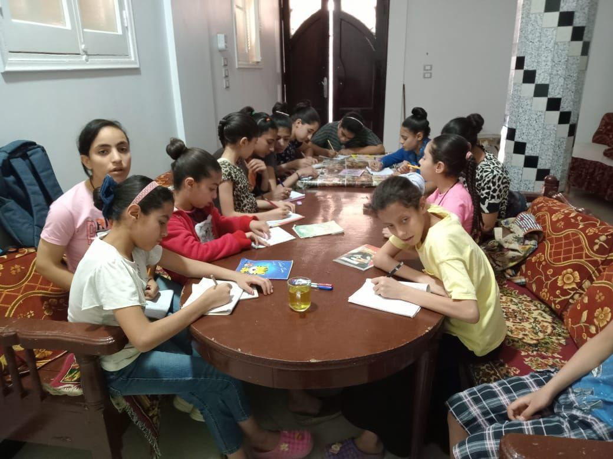
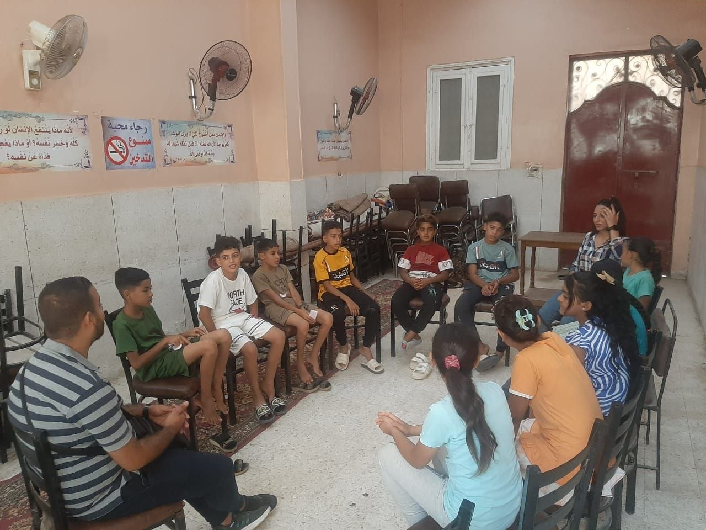
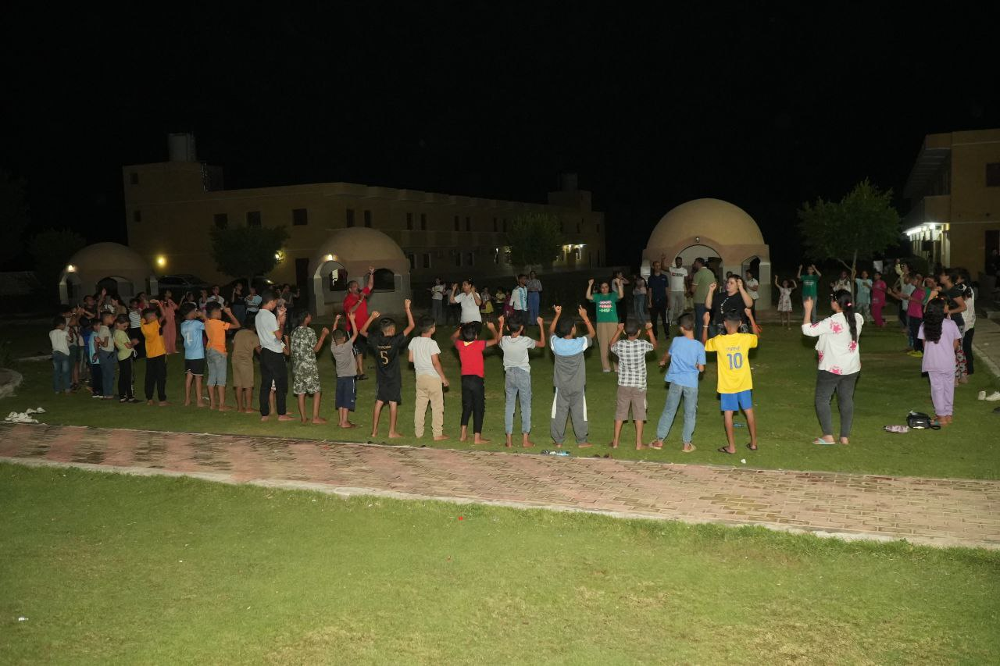
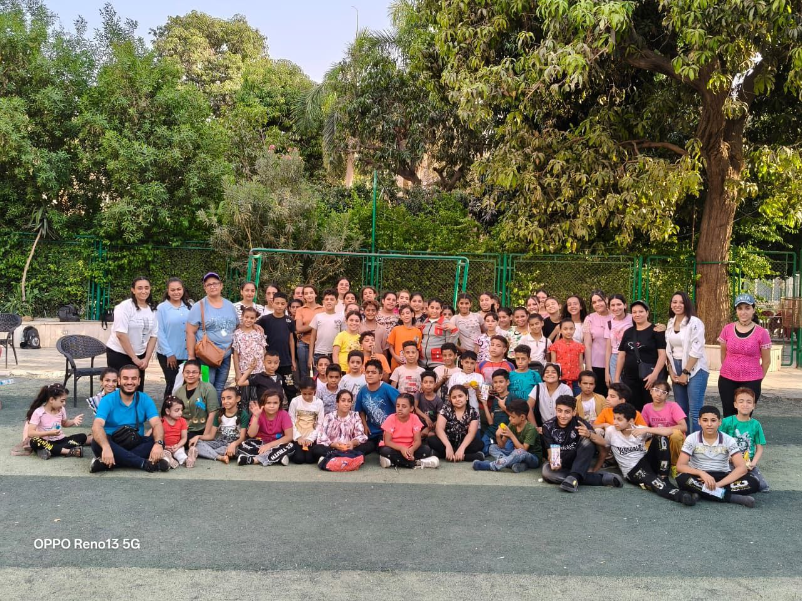
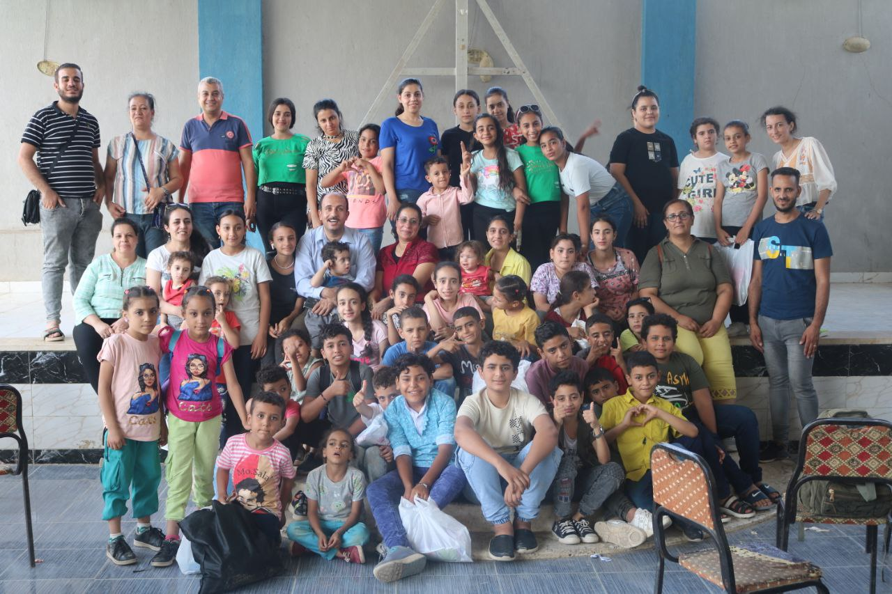

خدمات الأطفال
نقدم خدمات شاملة لتنمية جميع جوانب حياة الطفل

التعليم
عند افتتاح أي قرية جديدة نقوم بإجراء اختبار تحديد مستوى للأطفال بهدف تقسيمهم إلى مستويين:
١. مستوى التأسيس
يهدف لمساعدة الطفل الضعيف على تحسين القراءه والكتابة ليتمكن من التفوق في دراستة
٢. مستوى الدروس الخصوصية في المناهج الدراسية
نساعد في تسديد الاحتياج للدروس الخصوصية في المواد الدراسية
يتم اجراء امتحان شهرى لمتابعة مستوى الأطفال وتشجيعهم على التقدم والتفوق كما يتم التواصل المستمر مع مدرسين الأطفال لمتابعة اداءهم والاطمئنان على تطورهم الدراسى

التلمذة
- لقاء أسبوعي يجمع بين الترفيهي والتعليم
- يهدف لغرس المبادئ والسلوكيات الإيجابية
- ينمي الجوانب المختلفة في حياة الطفل (روحياً - نفسياً - مهارياً - ذهنياً - اجتماعياً)
- تشجيع الأطفال على المشاركة والتعبير بحرية
- يعزز الثقة بالنفس ويبني شخصية متوازنة

الأنشطة
نؤمن بأهمية الأنشطة الترفيهية والتنموية في حياة الأطفال. نقدم مجموعة متنوعة من الأنشطة:
١. المؤتمرات

نقوم بتنظيم مؤتمرات تهدف إلى التركيز على احتواء الأطفال وتعزيز شعورهم بالأمان والانتماء بما يسهم في دعم نموهم المتكامل وتطوير قدراتهم المختلفة
٢. رحلات ترفيهية

يتم تنظيم رحلات ترفيهية إلى أماكن متنوعة مثل حمامات السباحة والملاهي والمتاحف وغيرها لقضاء وقت ممتع
٣. حفلات موسمية

نحتفل مع الأطفال بالمناسبات المختلفة مثل الكريسماس، عيد القيامة، وبداية العام الدراسي من خلال حفلات خاصة مليئة بالفرح والبهجة.